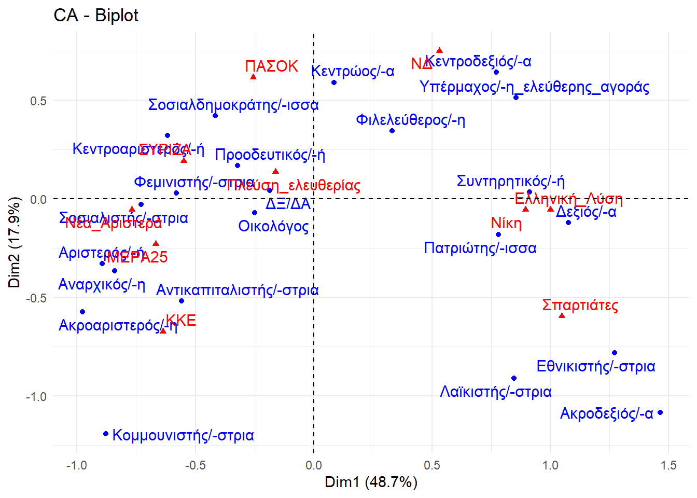

# Εισαγωγή αποθηκευμένων δεδομένων. Το περιεκτικότερο είναι το DEDOMENAvouli_2015_2021.rds
rm(list = ls())
# Ορισμός κάθε στήλης ως διάνυσμα (vector)
πολιτική_ταυτότητα <- c(
"Πατριώτης/-ισσα", "Κεντρώος/-α", "Προοδευτικός/-ή", "Κεντροδεξιός/-α",
"Κεντροαριστερός/-ή", "Φιλελεύθερος/-η", "Οικολόγος", "Αριστερός/-ή",
"Φεμινιστής/-στρια", "Σοσιαλδημοκράτης/-ισσα", "Υπέρμαχος/-η_ελεύθερης_αγοράς",
"Δεξιός/-α", "Συντηρητικός/-ή", "Σοσιαλιστής/-στρια", "Εθνικιστής/-στρια",
"Αντικαπιταλιστής/-στρια", "Κομμουνιστής/-στρια", "Αναρχικός/-η",
"Ακροδεξιός/-α", "Ακροαριστερός/-η", "Λαϊκιστής/-στρια", "ΔΞ/ΔΑ"
)
σύνολο <- c(
23, 20, 20, 18, 17, 15, 11, 10, 8, 8, 8, 8, 7, 6, 5, 4, 4, 2, 1, 1, 1, 6
)
κοινοβουλευτικη_ηλικια_17_34 <- c(
28, 19, 30, 16, 19, 26, 15, 15, 16, 11, 14, 12, 16, 10, 9, 9, 4, 3, 2, 2, 2, 5
)
κοινοβουλευτικη_ηλικια_35_54 <- c(
27, 19, 22, 17, 14, 15, 10, 8, 8, 9, 9, 9, 7, 4, 7, 3, 4, 2, 2, 1, 1, 8
)
κοινοβουλευτικη_ηλικια_55_plus <- c(
17, 22, 15, 19, 19, 10, 10, 10, 6, 6, 5, 5, 3, 5, 3, 3, 4, 1, 0, 1, 0, 4
)
ΝΔ <- c(
20, 29, 19, 43, 4, 28, 9, 0, 6, 4, 15, 11, 6, 1, 0, 0, 0, 0, 0, 0, 0, 3
)
ΣΥΡΙΖΑ <- c(
9, 14, 34, 3, 49, 4, 11, 29, 11, 7, 2, 1, 1, 11, 1, 6, 2, 2, 0, 1, 1, 3
)
ΠΑΣΟΚ <- c(
13, 39, 25, 7, 43, 11, 14, 4, 9, 30, 6, 1, 2, 14, 0, 1, 0, 1, 0, 0, 1, 2
)
ΚΚΕ <- c(
12, 10, 18, 2, 11, 8, 9, 32, 9, 3, 0, 0, 4, 12, 1, 16, 40, 5, 0, 4, 2, 5
)
Σπαρτιάτες <- c(
54, 8, 8, 8, 0, 12, 19, 0, 0, 4, 8, 19, 0, 0, 46, 4, 0, 0, 15, 0, 8, 0
)
Ελληνική_Λύση <- c(
52, 8, 9, 19, 3, 9, 1, 1, 0, 0, 7, 15, 18, 1, 18, 0, 0, 0, 3, 0, 2, 4
)
Νίκη <- c(
71, 12, 8, 17, 3, 7, 5, 0, 5, 3, 7, 27, 29, 2, 15, 7, 0, 0, 2, 0, 0, 3
)
Πλεύση_ελευθερίας <- c(
29, 19, 35, 3, 23, 10, 19, 10, 26, 13, 0, 6, 3, 3, 6, 6, 3, 3, 0, 0, 0, 16
)
Νέα_Αριστερά <- c(
4, 4, 27, 2, 37, 4, 27, 57, 24, 16, 0, 0, 2, 22, 0, 14, 0, 6, 0, 6, 0, 2
)
ΜΕΡΑ25 <- c(
12, 5, 29, 2, 24, 7, 22, 37, 29, 12, 0, 2, 0, 15, 0, 22, 12, 5, 0, 10, 0, 7
)
Αριστερά_Κεντροαριστερά <- c(
10, 6, 30, 0, 48, 5, 16, 31, 16, 15, 2, 0, 0, 15, 0, 11, 11, 5, 0, 3, 1, 1
)
# Δημιουργία του dataframe
df <- data.frame(
πολιτική_ταυτότητα,
σύνολο,
`17-34` = κοινοβουλευτικη_ηλικια_17_34, # Χρήση ` ` για στήλες με ειδικούς χαρακτήρες
`35-54` = κοινοβουλευτικη_ηλικια_35_54,
`55+` = κοινοβουλευτικη_ηλικια_55_plus,
ΝΔ,
ΣΥΡΙΖΑ,
ΠΑΣΟΚ,
ΚΚΕ,
Σπαρτιάτες,
Ελληνική_Λύση,
Νίκη,
Πλεύση_ελευθερίας,
Νέα_Αριστερά,
ΜΕΡΑ25,
Αριστερά_Κεντροαριστερά,
check.names = FALSE # Αυτό διατηρεί τα ονόματα των στηλών ακριβώς όπως τα δώσαμε, συμπεριλαμβανομένων των ειδικών χαρακτήρων
)| πολιτική_ταυτότητα | σύνολο | 17-34 | 35-54 | 55+ | ΝΔ | ΣΥΡΙΖΑ | ΠΑΣΟΚ | ΚΚΕ | Σπαρτιάτες | Ελληνική_Λύση | Νίκη | Πλεύση_ελευθερίας | Νέα_Αριστερά | ΜΕΡΑ25 | Αριστερά_Κεντροαριστερά |
|---|---|---|---|---|---|---|---|---|---|---|---|---|---|---|---|
| Πατριώτης/-ισσα | 23 | 28 | 27 | 17 | 20 | 9 | 13 | 12 | 54 | 52 | 71 | 29 | 4 | 12 | 10 |
| Κεντρώος/-α | 20 | 19 | 19 | 22 | 29 | 14 | 39 | 10 | 8 | 8 | 12 | 19 | 4 | 5 | 6 |
| Προοδευτικός/-ή | 20 | 30 | 22 | 15 | 19 | 34 | 25 | 18 | 8 | 9 | 8 | 35 | 27 | 29 | 30 |
| Κεντροδεξιός/-α | 18 | 16 | 17 | 19 | 43 | 3 | 7 | 2 | 8 | 19 | 17 | 3 | 2 | 2 | 0 |
| Κεντροαριστερός/-ή | 17 | 19 | 14 | 19 | 4 | 49 | 43 | 11 | 0 | 3 | 3 | 23 | 37 | 24 | 48 |
| Φιλελεύθερος/-η | 15 | 26 | 15 | 10 | 28 | 4 | 11 | 8 | 12 | 9 | 7 | 10 | 4 | 7 | 5 |
| Οικολόγος | 11 | 15 | 10 | 10 | 9 | 11 | 14 | 9 | 19 | 1 | 5 | 19 | 27 | 22 | 16 |
| Αριστερός/-ή | 10 | 15 | 8 | 10 | 0 | 29 | 4 | 32 | 0 | 1 | 0 | 10 | 57 | 37 | 31 |
| Φεμινιστής/-στρια | 8 | 16 | 8 | 6 | 6 | 11 | 9 | 9 | 0 | 0 | 5 | 26 | 24 | 29 | 16 |
| Σοσιαλδημοκράτης/-ισσα | 8 | 11 | 9 | 6 | 4 | 7 | 30 | 3 | 4 | 0 | 3 | 13 | 16 | 12 | 15 |
| Υπέρμαχος/-η_ελεύθερης_αγοράς | 8 | 14 | 9 | 5 | 15 | 2 | 6 | 0 | 8 | 7 | 7 | 0 | 0 | 0 | 2 |
| Δεξιός/-α | 8 | 12 | 9 | 5 | 11 | 1 | 1 | 0 | 19 | 15 | 27 | 6 | 0 | 2 | 0 |
| Συντηρητικός/-ή | 7 | 16 | 7 | 3 | 6 | 1 | 2 | 4 | 0 | 18 | 29 | 3 | 2 | 0 | 0 |
| Σοσιαλιστής/-στρια | 6 | 10 | 4 | 5 | 1 | 11 | 14 | 12 | 0 | 1 | 2 | 3 | 22 | 15 | 15 |
| Εθνικιστής/-στρια | 5 | 9 | 7 | 3 | 0 | 1 | 0 | 1 | 46 | 18 | 15 | 6 | 0 | 0 | 0 |
| Αντικαπιταλιστής/-στρια | 4 | 9 | 3 | 3 | 0 | 6 | 1 | 16 | 4 | 0 | 7 | 6 | 14 | 22 | 11 |
| Κομμουνιστής/-στρια | 4 | 4 | 4 | 4 | 0 | 2 | 0 | 40 | 0 | 0 | 0 | 3 | 0 | 12 | 11 |
| Αναρχικός/-η | 2 | 3 | 2 | 1 | 0 | 2 | 1 | 5 | 0 | 0 | 0 | 3 | 6 | 5 | 5 |
| Ακροδεξιός/-α | 1 | 2 | 2 | 0 | 0 | 0 | 0 | 0 | 15 | 3 | 2 | 0 | 0 | 0 | 0 |
| Ακροαριστερός/-η | 1 | 2 | 1 | 1 | 0 | 1 | 0 | 4 | 0 | 0 | 0 | 0 | 6 | 10 | 3 |
| Λαϊκιστής/-στρια | 1 | 2 | 1 | 0 | 0 | 1 | 1 | 2 | 8 | 2 | 0 | 0 | 0 | 0 | 1 |
| ΔΞ/ΔΑ | 6 | 5 | 8 | 4 | 3 | 3 | 2 | 5 | 0 | 4 | 3 | 16 | 2 | 7 | 1 |
if(!require(FactoMineR)){
install.packages("FactoMineR")
library(FactoMineR)
}
if(!require(factoextra)){
install.packages("factoextra")
library(factoextra)
}# Ορίζουμε τη στήλη 'πολιτική_ταυτότητα' ως ονόματα γραμμών
rownames(df) <- df$πολιτική_ταυτότητα
# Στη συνέχεια, την αφαιρούμε ως κανονική στήλη από το dataframe που θα δοθεί στην CA
df_ca <- df[, !colnames(df) %in% c("πολιτική_ταυτότητα", "σύνολο", "Αριστερά_Κεντροαριστερά", "17-34", "35-54", "55+")]
# Εκτέλεση της Correspondence Analysis
# graph = FALSE για να μην εμφανιστούν αυτόματα τα γραφήματα, θα τα φτιάξουμε με το factoextra
res.ca <- CA(df_ca, graph=FALSE)
fviz_ca_biplot(res.ca, repel = TRUE)+
theme_minimal()
## **Results of the Correspondence Analysis (CA)**
## The row variable has 22 categories; the column variable has 10 categories
## The chi square of independence between the two variables is equal to 2189.141 (p-value = 0 ).
## *The results are available in the following objects:
##
## name description
## 1 "$eig" "eigenvalues"
## 2 "$col" "results for the columns"
## 3 "$col$coord" "coord. for the columns"
## 4 "$col$cos2" "cos2 for the columns"
## 5 "$col$contrib" "contributions of the columns"
## 6 "$row" "results for the rows"
## 7 "$row$coord" "coord. for the rows"
## 8 "$row$cos2" "cos2 for the rows"
## 9 "$row$contrib" "contributions of the rows"
## 10 "$call" "summary called parameters"
## 11 "$call$marge.col" "weights of the columns"
## 12 "$call$marge.row" "weights of the rows"